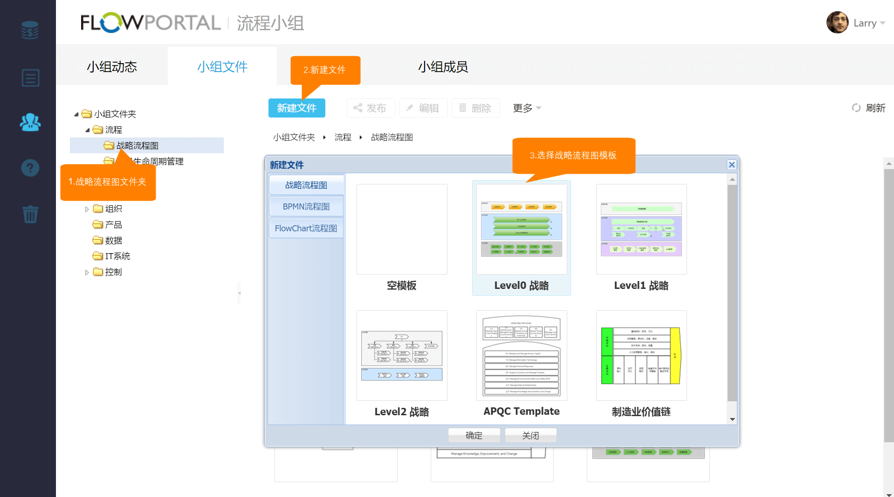
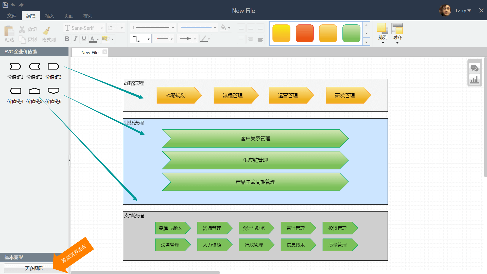

4.2 EVC战略流程图
EVC流程图库用于实现企业战略流程图的梳理
在FlowPortal BPA【流程小组】模块，进入【小组文件】页面，选择左侧导航菜单的【战略流程图】文件夹，点击【新建文件】按钮，选择【战略流程图】模板，进入流程设计界面。

进入流程设计界面后，通过拖拉左侧EVC企业价值链图形，绘制详细流程图，点击保存完成流程文件建立。
也可通过左下方【更多图形】按钮添加更多图形元素，用于绘制流程图。

Created with the Personal Edition of HelpNDoc: Free CHM Help documentation generator